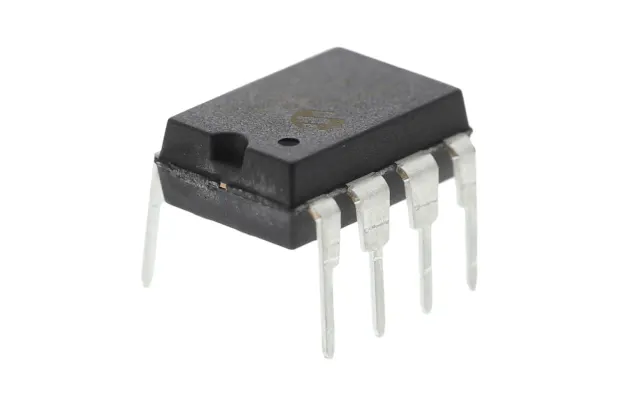
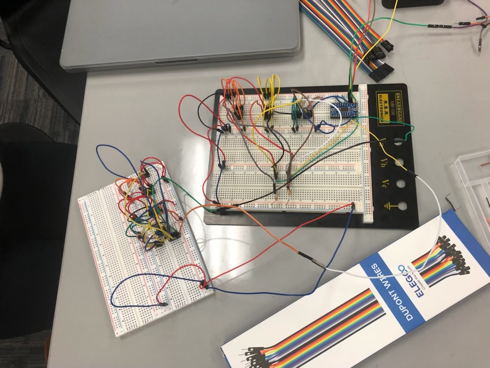
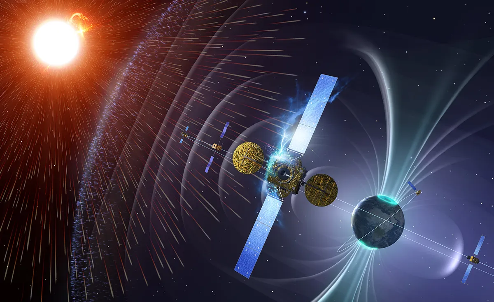
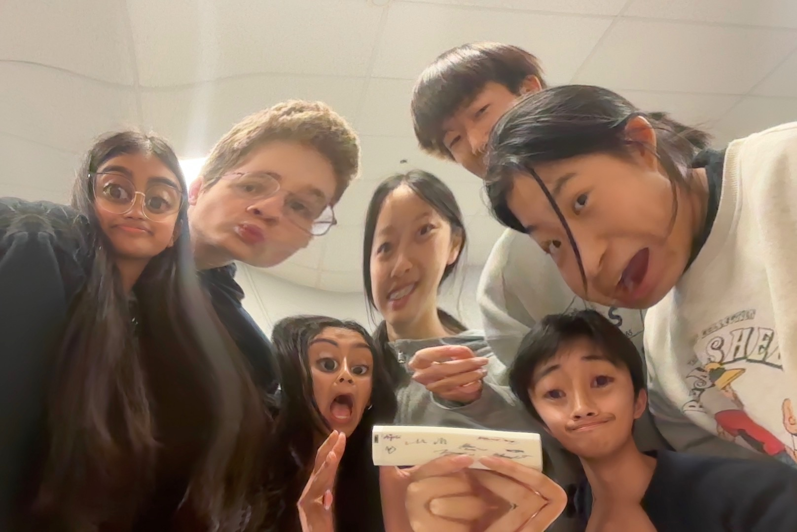
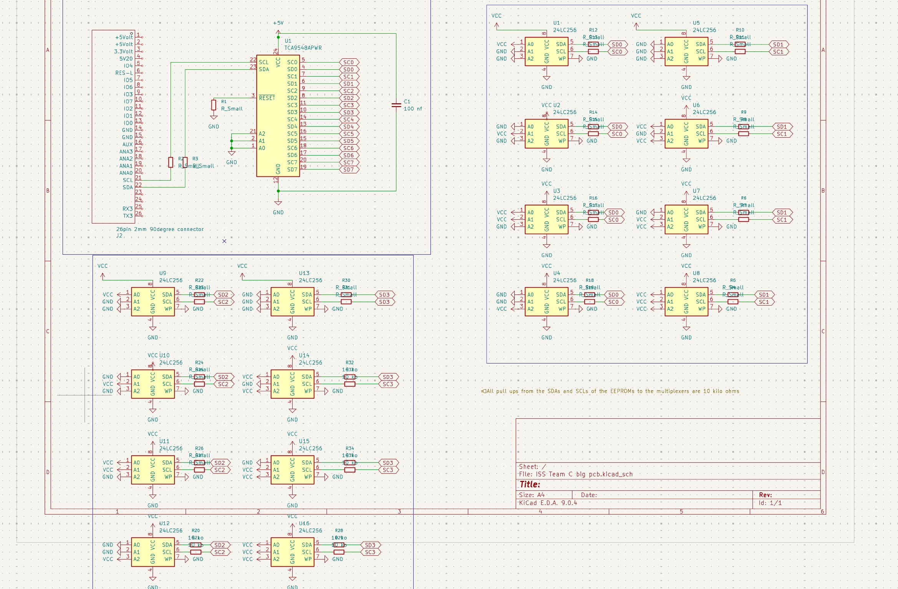
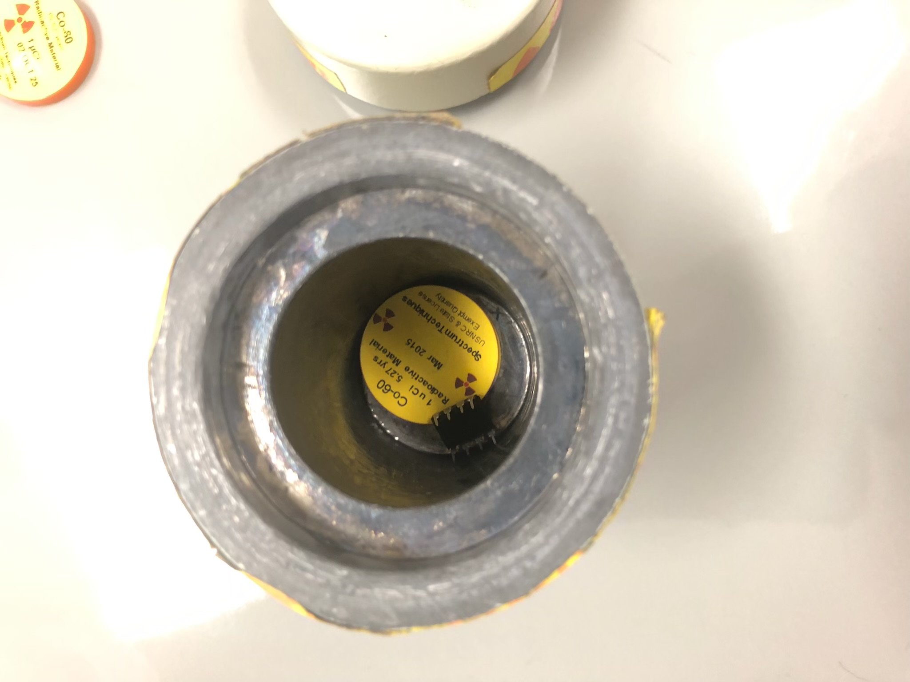
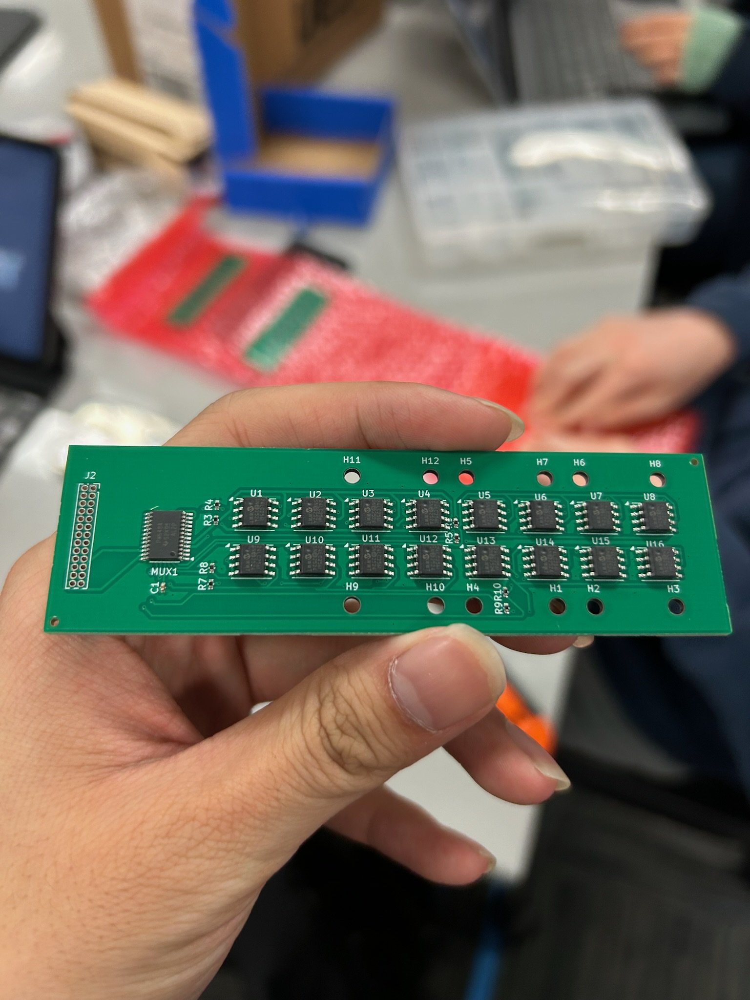

Influence of Cosmic Rays on EEPROM Memory Chips
Glad you are here EEPROMman!
EEPROM stands for Electrically Erasable Programmable Read-Only Memory chip, :0 ...huh, that's A LOT of words..., is unique because it retains data even when it's powered off, so it's widely used in microcontrollers, storing configuration settings, calibration data...etc.


Space Radiation such as cosmic ray, which consists of high energy particles, can penetrate spacecrafts and disrupt chips onboard. So in this experiment, we want to investigate the effectiveness of different materials (we also proposed a novel shielding method) on shielding eeproms from data corruption caused by cosmic ray.





It was a amazing but dangerous experience, as we need to use Co-60 and Cs-137 radiation source for ground testing. We also calculated that if you touch the sources for 4h you are going to die :（
Our electrical team also designed customized PCB, which seems cute but it doesn't work at the end! I'll go into more details later.